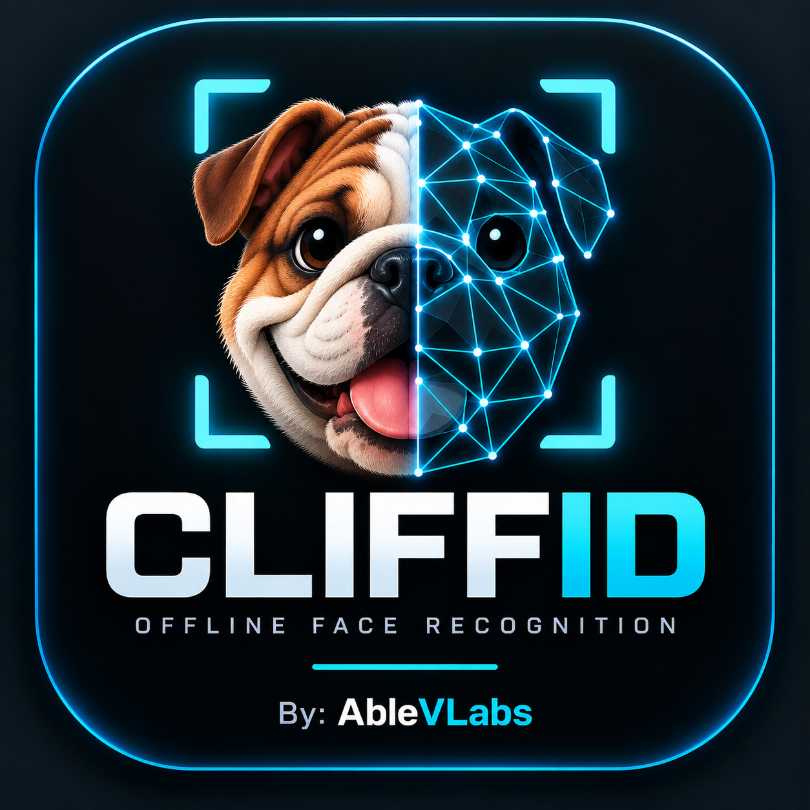

● computer vision · 06 // in progress NEW

Offline Face Recognition
Cliff + ID · named after Clifford, the family dog
PyTorch · runs on your machine · nothing leaves it
A desktop app that watches your webcam, puts a name over the faces it knows, and says unknown for everyone else. You enrol people from the window. It trains nothing, stores no photographs, and after the first run it never touches the internet again.
// what it is
Point it at your webcam. Every face gets a box: green with a name for the people it has met, amber and unknown for everyone else. To add someone, type a name, have them look at the camera, and click Enrol. That is the whole workflow.
The part most demos skip is the unknown. A recogniser that always picks its closest guess will confidently call a stranger by your name, and that is the one mistake people actually notice. CliffID refuses to answer when nobody enrolled is close enough, and shows you the distance so you can see how close the call was.
// how it works the idea is smaller than people expect
There is no classifier per person, and nothing is fine-tuned when you enrol. A pretrained network turns any face into 512 numbers, a faceprint. The same face photographed twice lands in almost the same place. Two different people land far apart. Everything else follows from that one property.
MTCNN locates every face and uses the eyes, nose and mouth to rotate and crop it to a standard square. Skipping this quietly costs accuracy: the model was trained on faces straightened the same way.
InceptionResnetV1, trained on VGGFace2, turns that square into 512 numbers scaled to a fixed length, so distances between any two faceprints mean the same thing.
Compare against everyone enrolled and take the nearest, if it is near enough. Enrolling is just saving a faceprint under a name. One photo is enough.
Paul Rudd 0.30 enrolled earlier, recognised on a tilted, brighter shot unknown 1.48 a real person it has never met 2 face(s) . Able one it knows, one it does not
Those numbers are real, from the test run. Recognising someone it had enrolled, on a photograph it had never seen, scored 0.30. A genuinely different person scored 1.48. The gap between those two is the entire product.
// try it your camera, your machine, nothing uploaded
This runs entirely in your browser. Your camera feed is never uploaded, never recorded, and never reaches a server, because there is no server: the model is downloaded to your machine and the whole thing happens there. Close the tab and every trace of it is gone.
Camera off
About 7 MB of model downloads the first time you start it. Nothing downloads until you press the button.
Enrolled 0
Nobody yet. Type a name, look at the camera, press Enrol.
Strictness 0.50
Left is stricter. Move it and watch the distances: below the line is a name, above it is unknown.
Idle.
Two honest notes. This demo is not the same engine as the desktop app. The desktop app uses PyTorch and a 512-number faceprint; a browser cannot run that, so the demo uses a smaller model with a 128-number faceprint. Same three steps, less separation between people, which is why it gets its own measured threshold below. And second: enrol yourself, or someone standing next to you who is happy to be enrolled. It is a toy on a portfolio site, not a reason to point a camera at a stranger.
// the demo got measured too
The browser model has a widely quoted default of 0.60. Rather than take it, the same measurement was run again on the same five faces and the same webcam-style changes, this time through the model that is actually running above.
| Pairs | Lowest | Median | Highest |
|---|---|---|---|
| Same person, after webcam-style change | 0.057 | 0.141 | 0.329 |
| Genuinely different people | 0.632 | 0.897 | 1.002 |
The closest pair of genuinely different people came out at 0.632. The quoted default of 0.60 sits 0.03 underneath it. That is not a safety margin, it is a rounding error, and one slightly unlucky pair of strangers puts a name on the wrong face. The slider above starts at 0.50 instead, which clears the worst same-person case by a wide margin and still leaves real distance to the nearest stranger.
Worth comparing to the desktop app, because the difference is the point. The PyTorch model's two groups sat between 0.36 and 0.97, a gap of 0.61. The browser model's sit between 0.33 and 0.63, a gap of 0.30. Half the room. That is the cost of a model small enough to download in seconds, and it is why the desktop app is the one to run if you want it to be right rather than convenient.
// the number that decides everything
Every face recogniser needs one number: how far apart two faceprints may be and still count as the same person. Too tight and it fails to know you. Too loose and it calls a stranger by your name. Most tutorials paste in a value and move on.
This one was measured. Five genuinely different real faces gave ten real different-person pairs. Each face was then put through the kind of change a webcam actually produces, dimmer, brighter, tilted ten degrees, zoomed, softened, mirrored, giving thirty same-person pairs.
| Pairs | Lowest | Median | Highest |
|---|---|---|---|
| Same person, after webcam-style change | 0.046 | 0.209 | 0.360 |
| Genuinely different people | 0.971 | 1.305 | 1.467 |
Every threshold between 0.36 and 0.97 scored thirty out of thirty recognised with zero false accepts, so the gap is wide and the exact value is not delicate. The default is 0.80, placed deliberately off-centre in that gap: well clear of the worst same-person case, because real life adds pose and expression that those variations do not, while staying below the closest different-person pair.
And the honest caveat, which is on the slider in the app for exactly this reason: those same-person pairs were variations of one photo each, not photos taken on different days. Real same-person distances will run higher. So the app shows the live distance and lets you move the threshold, because tuning it on your own face and your own lighting beats any number shipped in a file.
// privacy, by construction
// architecture
The recognition code knows nothing about windows or browsers. It finds faces, makes faceprints and matches them, and that is all it does. The desktop window and the browser page are both thin layers on top.
the whole shape
# the brain. no tkinter, no gradio, no idea either exists core/ detector.py # find faces, straighten them embedder.py # a face -> 512 numbers gallery.py # who is enrolled recognizer.py # the three joined up app.py # the desktop window (tkinter) web.py # the same thing in a browser (gradio)
That claim got tested rather than asserted. The browser version was written after
the desktop one, and it needed no change to core/ at all except letting the matching
take a per-visitor gallery, which the desktop app never needed because there is only ever one of
you. Everything else was reused untouched.
// run it
desktop
pip install -r requirements.txt python -m cliffid # your webcam python -m cliffid --fake # no webcam needed, see the window
browser, same engine
python -m cliffid.web
Type a name, look at the camera, click Enrol. It takes six frames and blends them, which is why you hold still for a second: the blend cancels whatever was odd about any single frame and keeps what is consistently you.
Status. Built and tested, running locally. 35 tests pass with no webcam and no model download required, because the camera has a stand-in and the window is tested against a stub. The public browser demo is written and ready to publish but is not up yet. This page will get the link when it is.